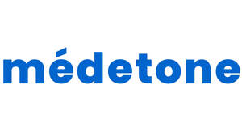
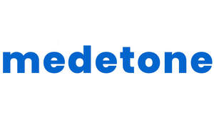
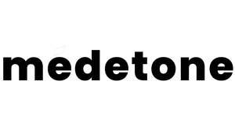
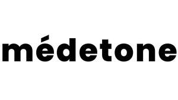

Trade Mark Journal No.2025/031 1 August 2025
UK00004238378 23 July 2025 (5,9,10,35,36,42,44)
Mark 1

Mark 2
MEDETONE
Mark 3

Mark 4
MÉDETONE
Mark 5

Mark 6

- Class 5
- Homeopathic pharmaceuticals; Pharmaceutical drugs; Medicine; Dermatological pharmaceutical products; Pharmaceutical creams; Homeopathic medicines; Pharmaceutical for the treatment of erectile dysfunction; Herbal medicine; Pharmaceutical preparations for use in dermatology; Pharmaceutical preparations for use in oncology; Pharmaceutical preparations for use in urology; Pharmaceutical preparations for use in ophthalmology; Pharmaceutical products for ophthalmological use; Dermatological pharmaceutical substances; Antifungal medication; Pharmaceuticals; Pharmaceutical preparations for veterinary use; Petroleum jelly for medical or veterinary purposes; Pharmaceuticals for the treatment of erectile dysfunction; Astringents [pharmaceutical]; Pharmaceutical preparations and substances for use in oncology; Injectable pharmaceuticals; Pharmaceutical preparations and substances for use in urology; Pharmaceutical solutions used in dialysis; Antibacterials for pharmaceutical use; Capsules for medicines; Medicine tonics; Pharmaceutical preparations for dental use; Medical foodstuff additives for veterinary use; Herbal creams for medical use; Pharmaceutical preparations and substances for use in gynecology; Pharmaceutical sweets; Analgesics for pharmaceutical use; Medical mouthwashes.
- Class 9
- Prescription eyewear; Prescription eyeglasses; Prescription sunglasses.
- Class 10
- Medical dosage dispensers for medical use; Pumps for medical use in dispensing pharmaceuticals from containers; Medical syringes; Medical tubing for administering drugs; Lab units for the dispensing of liquids [for medical use]; Pumps for medical use in delivering pharmaceuticals from containers; Cups for dispensing medicine; Medical inhalers; Medical stethoscopes; Medical instruments for therapeutic drug monitoring; Applicators for medications.
- Class 35
- Retail or wholesale services for pharmaceutical, veterinary and sanitary preparations and medical supplies; Retail services for pharmaceutical, veterinary and sanitary preparations and medical supplies; Providing administrative assistance to pharmacies for managing drug inventories; Wholesale services for pharmaceutical, veterinary and sanitary preparations and medical supplies; Medical billing services for doctors; Medical billing services for hospitals; Online retail store services relating to cosmetic and beauty products; Retail services in relation to pharmaceutical preparations; Administration of the business affairs of retail stores; Mail order retail services for cosmetics; Online retail services relating to cosmetics; Business administration services in the field of healthcare; Medical billing; Administering medication reimbursement programs and services; Administering pharmacy reimbursement programs and services; Advertising services relating to pharmaceuticals for the treatment of diabetes.
- Class 36
- Insurance administration of prescription drug benefit plans; Dental health insurance administration; Medical insurance; Medical insurance brokerage services.
- Class 42
- Scientific research in the field of pharmacy; Chemist services; Services of a chemist; Pharmaceutical drug development services; Medical laboratories; Chemists services; Medical laboratory services; Pharmaceutical research services; Veterinary laboratory services; Development of pharmaceutical preparations and medicines; Medical research laboratory services.
- Class 44
- Pharmacy services; Pharmacy advice; Preparation of prescriptions in pharmacies; Pharmacy advisory services; Preparation of prescriptions by pharmacists; Dispensing of pharmaceuticals; Medical and healthcare clinics; Health clinic services [medical]; Medical clinic services; Clinic (Medical -) services; Clinic services (Medical -); Pharmaceutical services; Medical nursing; Nursing, medical; Pharmaceutical consultation; Clinics (Medical -); Medical clinics; Mobile medical clinic services; Medical nursing services; Nursing services (Medical -); Health clinic services; Dental clinic services; Advisory services relating to pharmacies; Hospital nursing home services; Medical services in the field of oncology; Homeopathic clinical services; Medical and healthcare services; Providing online medical record services other than dentistry; Medical spa services; Health resort services [medical]; Medical services in the field of nephrology; Preparation and dispensing of medications; Optometry; Dietetic counselling services [medical]; Physician services; Medical services in the field of diabetes; Pharmaceutical advice; Medication counseling; Medical testing; Medical tele-reporting [medical services]; Medical care; Medical counseling; Medical services; Medical examination; Medical examinations; Medical assistance; Medical counselling; Ambulant medical care; Medical diagnostic services; Medical consultations; Medical treatment services; Medical consultation; Medical information; Medical care services; Medical screening; Medical imaging services; Remote monitoring of medical data for medical diagnosis and treatment; Emergency medical assistance; Rental of medical and health care equipment; Medical assistance consultancy provided by doctors and other specialized medical personnel; Medical counseling services; Medical health assessment services; Provision of medical treatment; Medical advice in the field of pregnancy; Arranging of medical treatment; Medical care of feet; Emergency assistance services in the medical field; Health farm services [medical]; Providing medical support in the monitoring of patients receiving medical treatments; Medical evaluation services; Medical examination of individuals.
Abdullah Mohammed Sebeih Holding Co.
Representative: Abdullah Sabyah